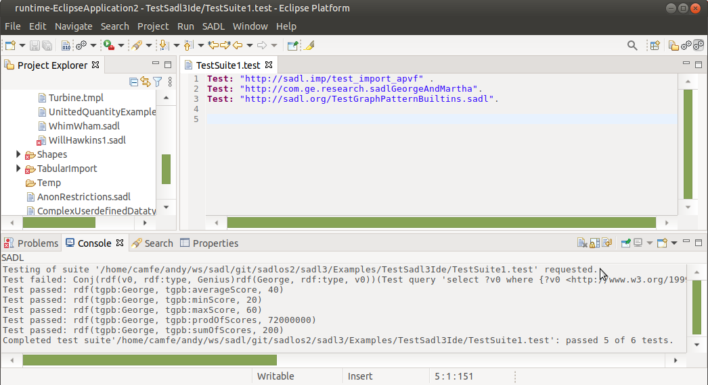
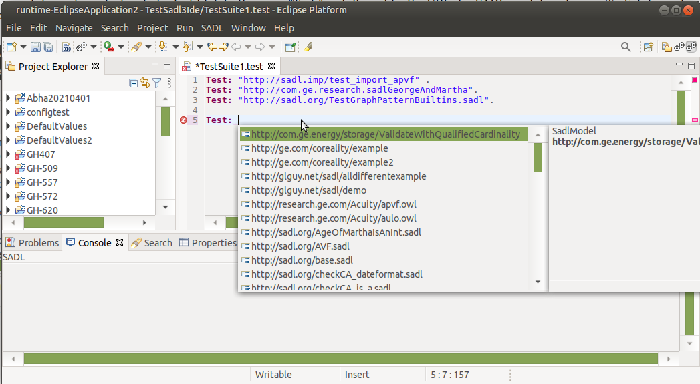

The SADL grammar supports Test statements consisting of the Test keyword, followed by a colon, followed by the test to be executed. There are two kinds of Test statements in SADL. The first kind is a statement in a SADL model (a .sadl file) and consists of an expression in the SADL expression grammar that will evaluate to true or false. Upon running inference (executing Test Model), if the statement evaluates to true, the test passes. Otherwise the test fails. The screen shot below showed a Test statement of this type and the results of running Test Model on the SADL model.
The second kind is a statement in a test suite (a .test file). In this case "Test:" is followed by the URI of a SADL model containing Test statements of the first kind. This causes all of the Test statements in the specified SADL model to be executed as part of the test suite. Individual test results as well as summary information is displayed in the console window. This is illustrated in the screen shot below showing a test suite referencing three SADL models.

The Eclipse-based SADL IDE includes a Test Suite Editor which can be used to open and edit files ending with ".test". This editor has content assist and hyperlinking to referenced SADL models. Content assist in shown in the screen capture below.

As noted above, a test statement in the SADL grammar is the Test: prefix followed by a SADL expression which can be evaluated to true or false.